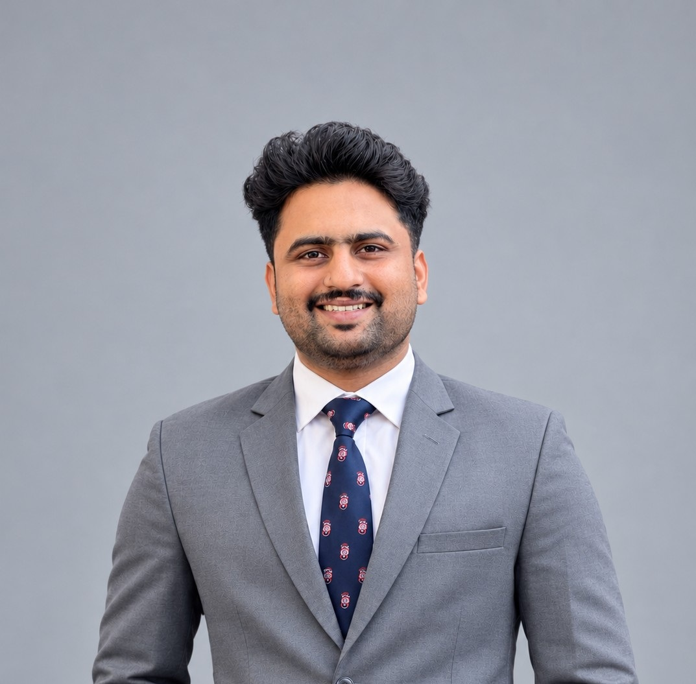

A LITTLE ABOUT ME
Driven by curiosity, guided by purpose.
Computer Science and Engineering student at IUBAT, with an interest in technology, student engagement, and creative collaboration.

MY STORY
Hello, I'm Sabbir.
I am Md. Sabbir Islam, a B.Sc. student in Computer Science and Engineering at the International University of Business Agriculture and Technology (IUBAT).
Alongside my studies, I take part in university cultural activities, event organization, and student-focused initiatives. As Assistant Music Secretary of the IUBAT Cultural Forum (Krishnochura), a volunteer with the IUBAT IT Society, and an event organizer, I have gained practical experience in communication, teamwork, coordination, and student engagement. My CV records involvement in 10+ university events.
I also bring approximately five years of home-tutoring experience, where I explain academic topics in clear and understandable ways. My creative and digital skills include professional video editing, motion graphics, social media content creation, digital promotion, photo editing, photography, and videography. My technical skills include C, C++, Python, HTML, and CSS.
Continuous learning, thoughtful communication, teamwork, and contributing positively to the community around me.